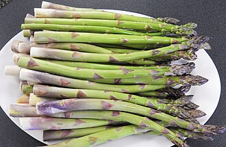

アスパラガスの生産量
いちばん多くとれる都道府県
アスパラガスが日本でいちばん多くとれるのは北海道です。2,760 tで、全国（2万2,300 t）の12%を占めます。

| 順位 | 都道府県 | 収穫量 | 全国に占める割合 |
|---|---|---|---|
| 1位 | 北海道 | 2,760 t | 12% |
| 2位 | 佐賀県 | 1,990 t | 8.9% |
| 3位 | 熊本県 | 1,900 t | 8.5% |
この数字について
- 分類：キジカクシ科
- 全国の収穫量：2万2,300 t
- この数字が表すもの：収穫量（畑や田でとれた重さ）
- 調査：作物統計調査 作況調査（野菜） 令和6年産
- 18県分を調査（調査していない県は順位に入りません）